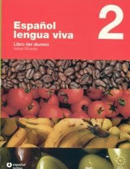

Diccionario cani
 De: La Frikipedia, la enciclopedia extremadamente seria.
De: La Frikipedia, la enciclopedia extremadamente seria.
A pesar de su inteligencia reducida, los canis han conseguido crear un lenguaje (¿Se puede considerar lenguaje?) a nivel suburbial. Aquí vienen algunos ejemplos de este idioma en estudio:
Diccionario Cani/Choni - español (oral y/o/u escrito)
 Algo que los canis nunca cogeran
- ¿tieNehJora?: Cani pidiendote la hora (Intento de robo número 1).
- ¿tieNehFueGo?: Cani pidiendote un mechero (Intento de robo número 2).
- ¿tieNejunClínes?: Cani pidiendote un Clínes (Intento de robo número 3).
- Ké Aseh IllO SHulo?: traducción de :¿que haces quillo chulo?(no pregunten).
- amelotó Primoh: Cani pidiendote amablemente que le des tus pertenencias.
- amelotóoOoOo: Cani pidiendote agresivamente que le des tus pertenencias.
- amoNó Parpoli: Del verbo Vámonos, también determina el lugar al que se dirigen.
- pinGre: Patatas onduladas de la marca Pringles.
- duBeDé: Reproductor de Discos en formato DVD.
- gUiN: Cosola de NINTENDO/QUE SU'emoS GaNAO!.
- ai miíRa-arcaxondo: FÍJATE!.
- ¡suprimo aY!: Ese Hijo del hermano de mi padre, en ese lugar.
- man0oh: Hermano.
- lero: Cigarrillo, utensilio para masocas (ya que acorta la vida).
- mari: Mari ó Marihuena, droga, hierba que se utiliza para ver pingüinos de colores.
- flipa: Alucinar.
- buga: Cochecito leré.
- amoto: Vehículo de dos ruedas muy utilizado por los canis más jóvenes.
- payo: Del gitano, el que no es gitano.
- colega: Amigo de confianza ó padre.
- viejo/a: Padre, madre.
- sosio: Socio, normalmente, no es su socio, o sease, que es nadie.
- ompare: Fusión entre hombre, y padre, o Compadre.
- mué: Mujer, señorita.
- FrAaaGoNeeTaH: Furgoneta.
- musho/muxo/muxho: Mucho, demasiado.
- peazo: Pedazo... (se refiere a "Menudo...buga" por ejemplo).
- ome: Hombre
- niquelao: Espectacular.
- reggaetón: Mejor no hablemos de esto...(me dan arcadas).
- mjor: Mejor.
- x?: ¿Por qué?.
- xk: Porque.
- via: Vida / raíl por donde pasa un tren/locomotora.
- lú: Luz.
- noshe/noxe: Etapa nocturna por la ocultación del sol.
- msn: Mensajería Instantánea para Negados.
- ReShúl0N: Algo atractivo o muy chulo.
- xat: Chat, lugar para charlar.
- tele: Televisión.
- pésétrés: Videoconsola de la marca Sony.
- pleysteshion: Videoconsola de la marca Sony.
- pésépé: Videoconsola (vuelvo a decir) de la marca Sony.
- wapo/a: Adjetivo de Bonito, bonita. (Ya sea para objetos o personas)
- pazote: Pasote, aún se investiga.
- framenco/flamenco/flamenquito: Música que Aghhh...Ughh...Eghhh...
- tio: Amigo/familiar.
- amsté: Animalito de la familia de los ratones (véase Hamtaro).
- ia: Chiquilla, Ya.
- kiya: Chiquilla.
- pazo: Paso
- pota mae: Puta Madre.
- vaSiLoNaH: Subnormal.
- cani: Cosa Armada Normalmente Imbecil.
- pisha: Amigo.
- ave: Sabes.
- pff: Bueeeno.
- tomToH: Tonto.
- puTeRaH: Niñata sin futuro.
- agasha: Agacha.
- comeh: Mastica.
- vieo: 1. Anciano inofensivo. 2. Video.
- nove: No ves.
- papé: Utensilio de celulosa.
- compae: Compadre.
- opá: Padre.
- omá: Madre.
- talego: Sitio, ubicación de algo.
- olao: Volado.
- cabesha: Cabeza/coco.
- shipoTeH: Aparato reproductor masculino.
- shishi: Aparato reproductor femenino.
- jerbi: Heavy/pesado/dios/Herbie (el de la peli).
- gortiko: Persona con camiseta negra y/o de un grupo de música rock/heavy.
- arma: Alma, espíritu.
- xorBaza/o: Persona, que cree que es "perfecto" pero no es asi.
- loka: Loca, persona animal o cosa, (normalmente cosa), no inteligente, con el CI de -20 para abajo.
- muack: Beso/piquito.
- argo: Algo, alguna cosa, en su susodicha cuestión.
- ná: Nada, o sease, que no hay nada.
- nanai: No.
- kie: Quieres.
- shu/tuh/tuH/thu,etc: Su, Tu.
- morenoh/ah: Niñato/a.
- esternocleidomastoideo: ¿Esto que pinta aquí?.
- xulo/a, shulo/a: Persona, animal o cosa (siempre animal) que se cree superior a los de su entorno, en la realidad, chulo, significa idiota ganapasta, que gobierna un puticlub.
- er: El.
- laH: La.
- caShondAh/oh: Animal, que está en celo.
- shuaVonAh: Persona, que no sabe ni lo que significa Suavona, pero en fin... se creen importantes.
- vazilá/ndo: Verbo, que significa presumir, pero esto, no lo llega a entender estos extraños seres.
- úevo: Huevo.
- primOh /prémOh: Persona, NO pariente de la que habla.
- ruina: Negado, persona o cosa, no inteligente.
- wena Ente: Persona, que se le considera solidaria.
- wena: Buena.
- nte: Personas, grupo de personas.
- ilipoya: Gilipoyas, insulto, ofensivo principal de Canis.
- shOrizO: Condimento para cazuelas y/o potajes.
- vivah: Viva.
- she/xe: Ese.
- kieru: Quiero.
- te amoh: Quiero tener actos sexuales contigo.
- lote/lotazo: Borrachera.
- estar afilado/a: Tener ganas de hacer algo, estar cachondo/a.
- posse: Adjetivo utilizado para definirse a ellos mismos.
- pambita: Léase posse.
- perreo: Estilo de baile patético erótico (léase reggaeton).
- nano: Cani Bajito (usualmente son los que mas violencia utilizan... tendrán complejo).
- oa: Hola / Expresión CANI resultado de ver muchos Teletubies.
- niniah: Generalmente novia.
- shu shunguelo: El malote del barrio.
- dar er palo: Cosa que se da a alguien o algo. Acción de apoderarse de objetos ajenos que un cani no se puede permitir (O sea, todo, incluidos los leros).
- la de eze/ds: La consola de los canis chorizada a un niño inocente.
- leuriyo: Euro.
- vinidá: virginidad (cosa que desconocen).
- jhessi: generalmente se le dice asi a las novias de los canis.
- er lloni: el tio chungo al que con el que te amenazan
Gramatica
En la forma oral (en la escrita también) se suelen intercambiar palabras de lugar
como por ejemplo en lugar de Se me ha caído Me se ha caido y también puede
ocurrir con las letras, en lugar de estas hecho un loco etsas echo un loko.
La forma de pronunciación suele ser con unos decibelios muy altos, fatales para el oído
humano, en las Jessis sobre todo, y en el macho cani predomina sobre todo la gangosidad
al hablar. Muy pocas personas logran entender a los canis.
En su forma escrita (msn) predominan faltas de ortografias como en lugar de había
avia y atrocidades por el estilo. TaMbiEn PrEdOmiNa El LeNgUaJe Al EsTiLo MoNtAñA RuSa.
Siempre que es posible se añaden h hasta lo máximo posible, en lugar de Hoy iremos a una fiesta
En este pintoresco idioma sería: oIh aHmOh a UnAh FieStAh (se pueden observar cambios de palabras iremos por ahmoh (vamos), pues algunos tiempos verbales son complicados para ellos.) En la forma escrita puede traducirse susodichos jeroglíficos, solo los expertos que sepan descifrar tal idioma proveniente de una estirpe perdida de egipcios cruzados con perros y mongólicos que aprendieron a evolucionar en poblados, aprendieron a usar la percusión de donde proviene el regga... dios lo siento no puedo nombrar esa palabra si se puede definir como tal, su idioma basado en cosa rara como si comieras un yogur caducado de hace 3 meses y después de haberte bebido un poco de semen de burro mezclado con un poco de mierda de vaca y después haberlo potado todo este es un ejemplo de su idioma EeEscυ×o aaA roвAAA Aℓвa i perREeeoH CoOOη тrιιO seSSυaℓ Gιтaηaaas υappaaAsн dios mis ojos por favor después de haber escrito esto no creo que sobreviva en mi lecho de muerte esta seria la traducción Escucho a pitbull y perreo con tres guapas, por favor dono mis pelillos del culo al estudio de limpieza de tropezones de mierda en el ojete al cagar y limpiarte.
Suelen referirse a la persona que mantiene conversación (si se le puede considerar conversación..)
en 3ª persona, y destrozando su nombre, es decir en lugar de "Hola Guille" sería algo así como
"EsSeH GiYeEeH".
Parece complicada la comunicacion con estos seres pero hay algo que la complica algo mas:
Los Emoticonos.
¿Que cani que se precie no tiene 2000000 emoticones absurdos?
La mayoría atienden razones como un muñequito del playboy, o letras ardiendo, o incluso
muñequitos manteniendo el coito, estos emoticones dicficultan mucho la comunicacion
y el comunicador se acaba aburriendo.
IP anónima: Significa ser un gilipollas en contra de Steven Seagal.
MORALEJA DE ESTE ARTICULO: No hables con canis
Enlaces Externos

|
Diccionarios
|
|
Extension:DynamicPageList (DPL), version 2.3.0 : Error: Wrong 'namespace' parameter: 'Diccionario'! Help: namespace= empty string (Main) | Anexo | Anexo_discusión | Archivo | Archivo_discusión | Ayuda | Ayuda_discusión | Categoría | Categoría_discusión | Discusión | Frikilibro | Frikilibro_discusión | La_Frikipedia | La_Frikipedia_discusión | MediaWiki | MediaWiki_discusión | Minecraft | Minecraft_discusión | Piriódico | Piriódico_discusión | Plantilla | Plantilla_discusión | Poll | Poll_talk | Portal | Portal_discusión | Proyecto | Proyecto_discusión | Summary | Summary_talk | Thread | Thread_talk | UserWiki | UserWiki_talk | User_profile | User_profile_talk | Usuario | Usuario_discusión | Widget | Widget_talk.
|
|
Autor(es):
- Fordus
- Frikiman
- Alex2610
- Guilfer
- Khazike Khashondo
- Azulejos
- El Sevillano
- Diegocon13
- Yonkarra
- Pajkasiato
Frikipedia 2005-2016, Licencia
GFDL 1.2 - Extraído por FrikiLeaks